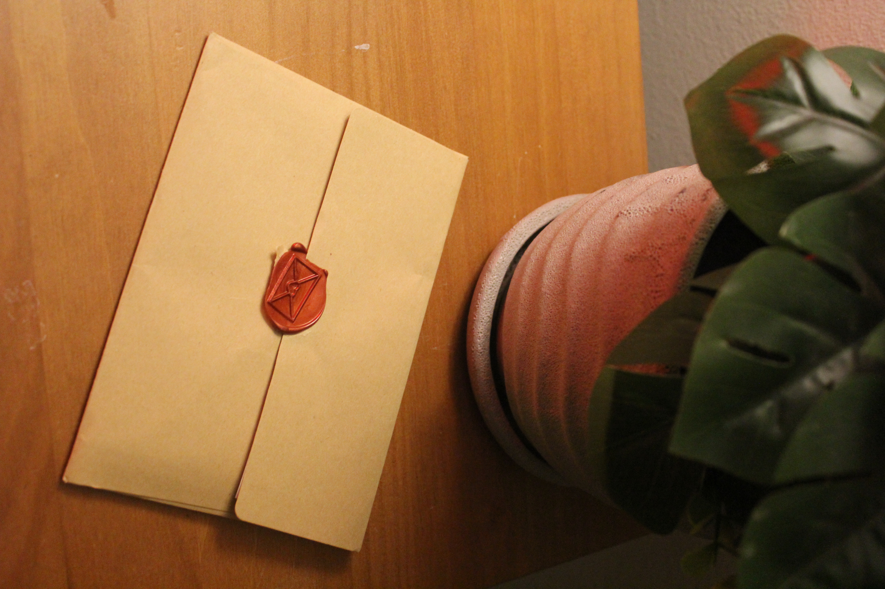
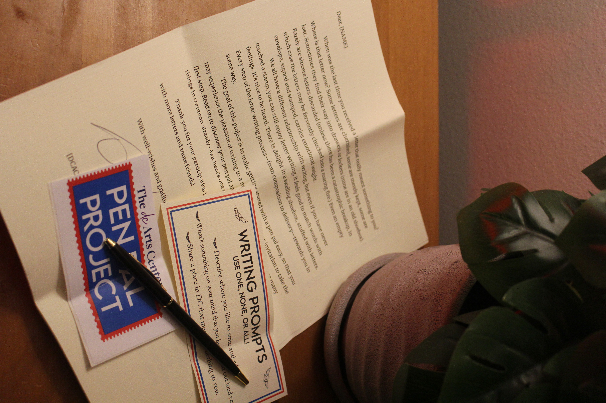
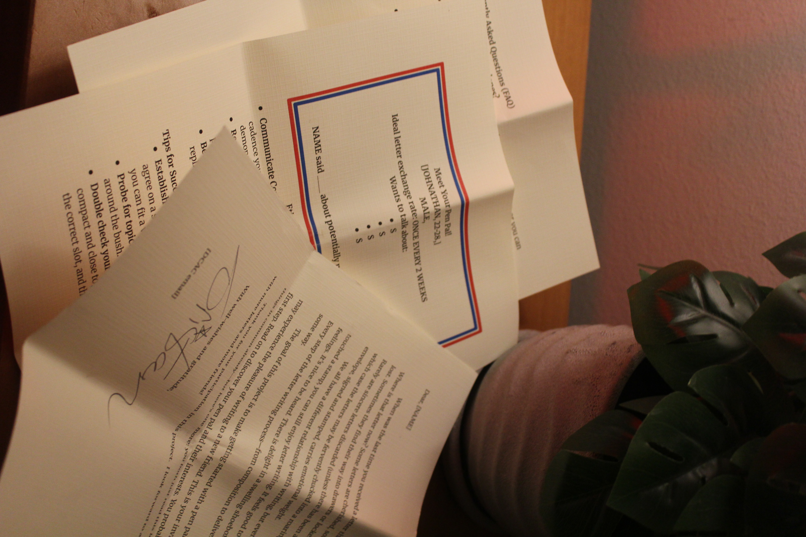

AdMo Pen Pals
Creating connection through written correspondence.
A neighborhood pen pal program I built at the DC Arts Center to bring back the lost art of correspondence. Neighbors sign up, receive a handcrafted welcome letter, and get matched with someone nearby—80+ people so far, plus a second chapter now running at the University of Florida.





- 80+ sign-ups
- Two ongoing programs
- Dozens of letters delivered
- A replicable matching framework
How can I connect with my neighbors through writing?
Sleepless nights tend to poke and prod at our poor weary brains. Usually all that poking is unproductive, just to exhaust the poor organ into dreamy submission. Sometimes, there is an exception. I’m not sure how many pokes it took, but eventually an idea shot out from my unconscious and eclipsed all other thoughts: I wanted a pen pal. I desperately wanted to write a letter to someone nearby with the guarantee that they would read it. This used to be easy, now it is hard. I really wanted to make it easy again—not just for me, but for everyone.
The DC Arts Center Pen Pal Project is a local pen pal initiative that seeks to keep the art of correspondence alive by creating and sustaining friendships and dialogue in Adams Morgan. The local aspect is crucial; all participants have a relationship with this neighborhood. Most modes of correspondence today encourage distance—both personal and physical. The pen pal project closes that distance. Distance is not necessarily bad, but we have enough of it. It’s time for something that asks us to be earnest, to be real.
Writing pen-to-paper encourages people to think differently, to share sincerely, to be intentional. To connect with a stranger and wait patiently for a response—that is rare too. The benefits of having a pen pal have long been known, but opportunities to participate are infrequent.
Thanks to the institutional support of DCAC, finding a pen pal is easy. Users sign up with a brief survey and soon after are notified of a welcome letter awaiting them at DCAC. The welcome letter is the key to their correspondence; within it they learn how the system functions and—most importantly—who their pen pal is. Every aspect of the experience is accessible: envelopes are provided, and all writing levels are encouraged.
Sincere correspondence builds community. The DCAC Pen Pal Project endeavors to create a more connected neighborhood through the shared joy of letter writing.
The project is a replicable framework. It is now established at my alma mater, the University of Florida, under a club I used to lead: The English Society. Students can send and retrieve letters straight from the university library.